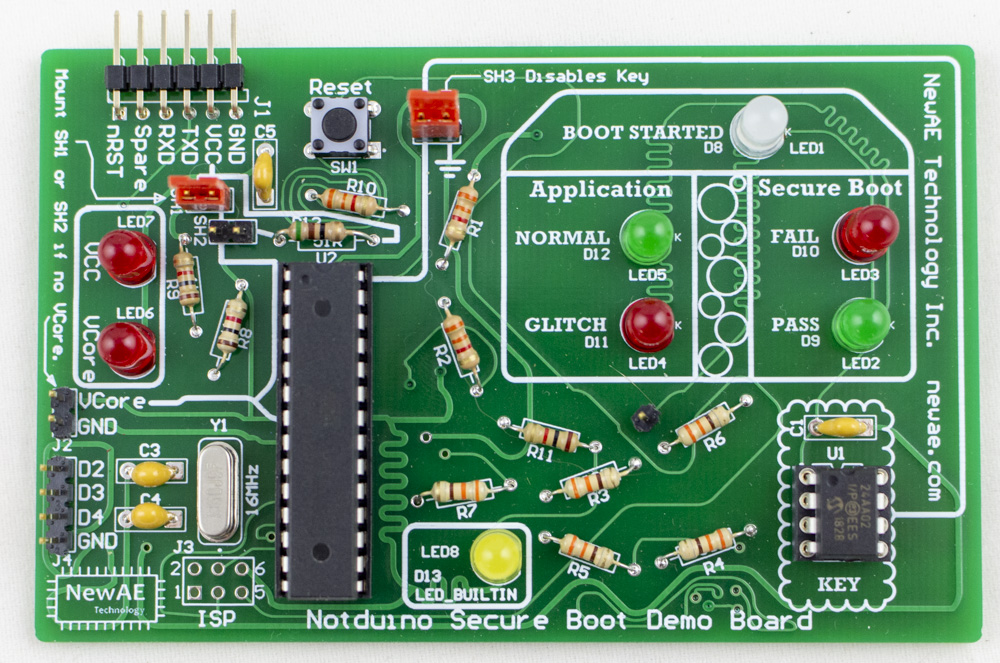

NOTduino Secure Boot Demo Board
The NOTDuino was originally part of the ChipWhisperer-Lite Kickstarter campaign.
This is extended to now work as a "secure boot" demo board. The "secure boot" isn't really that secure, as the default version of it looks just for a special I2C EEPROM magic value.

Background¶
Boot Process Summary¶
The NOTDuino boot process is as follows:
- Check if I2C bus appears to be available (not stuck). If bus is stuck, we stop boot.
- Try talking to an I2C EEPROM at address
0x50, and read address0xA7. If the read fails, stop boot. - Check that address
0xA7is set to magic value0xDE. If this is true, continue boot, otherwise stop boot.
The I2C socket is designed to also accept a XXXX device, which would be closer to a more relevant secure device. Unfortunately shipping those devices triggers certain export rules, so we instead use the simple EEPROM in the kit.
Application Code¶
If the boot succeeds, the following code is run in a loop:
cnt = 0;
for (i=0; i < 200; i++){
for(j=0; j < 200; j++){
cnt++;
}
}
if(cnt == 40000){
digitalWrite(LED_NORMAL, HIGH);
} else {
digitalWrite(LED_GLITCH, HIGH);
}
This should result in the NORMAL blinking green. If you see the GLITCH blink red, it means you have successfully glitched the code, without crashing the target device!
Glitching the Boot¶
Once you get a useful glitch, you should try glitching secure boot. Insert the jumper at SH3 which shorts the I2C line, thus disabling the key (same as if the EEPROM was removed or loaded with incorrect data).
The device will now lite the FAIL boot LED. Oh no! If you looked at the code, the implementation works like this:
if(boot_ok() == 0) {
digitalWrite(LED_FAIL, HIGH);
Serial.print("Boot FAILED - application blocked\n");
while(1);
} else {
digitalWrite(LED_OK, HIGH);
Serial.print("Boot OK\n");
}
Glitching Manually¶
The first thing you can do is use the push-button trigger on the ChipJabber-Unplugged, and simply try glitching out of the while(1) loop. If you are successful, you'll see the NORMAL LED start flashing as the application is now running. The boot will still be marked as FAIL, since we didn't actually bypass the boot check, just glitched out of the loop.
Glitching Automatically¶
Using the PCB trace going to LED1, you can solder a pin header into one of the vias. This will now be used as a trigger for a rising-edge input trigger.
You'll have to experiment with the delay setting, but you should be able to get the device to automatically start running the application after a reset. Use the reset switch (SW1) to keep resetting the device.
Building the Kit¶
Errata¶
Note in the various photos 3.3K resistors are used in place of 10K, as I ran out of 10K when I built this. Will be fixed in later photos.